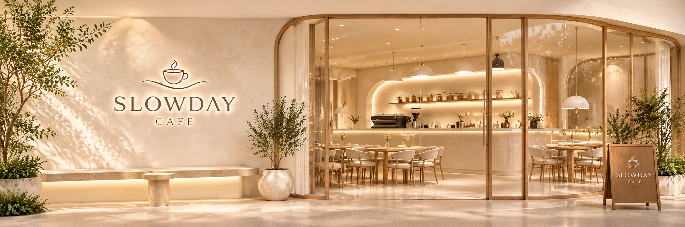
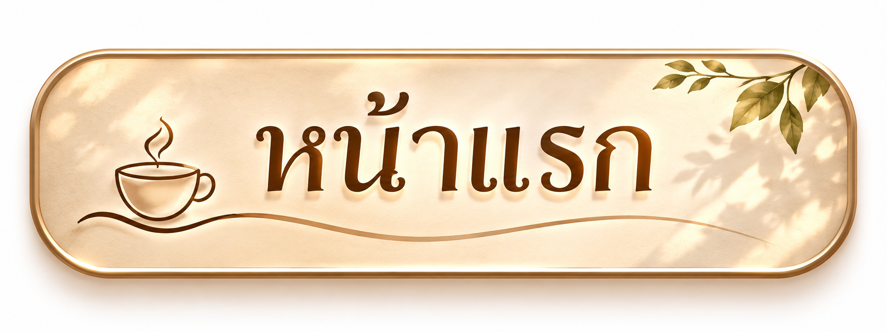
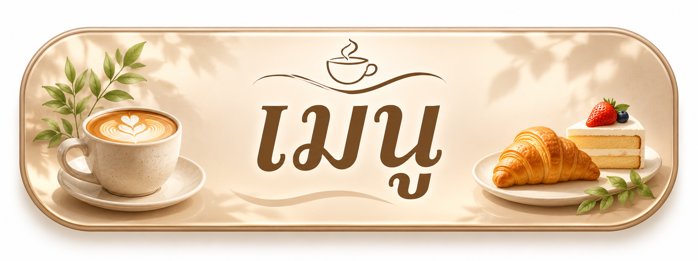
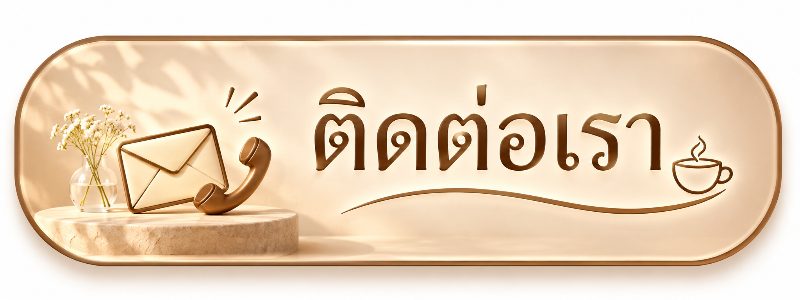
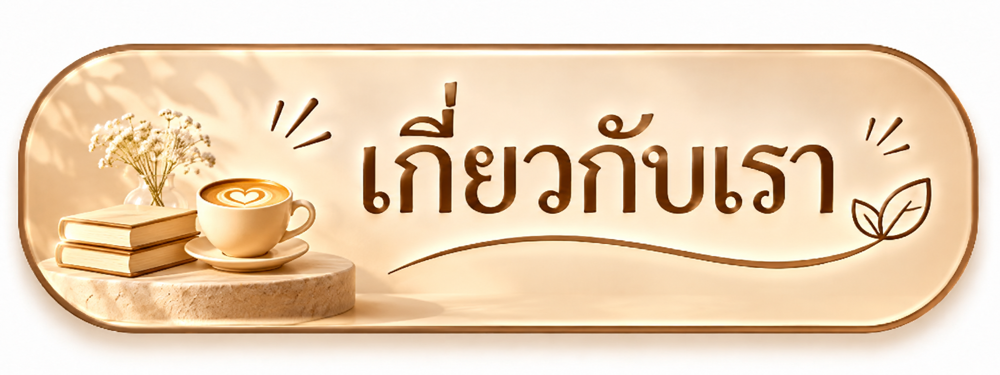

Slow down, sip happiness.
SLOWDAY CAFE เป็นคาเฟ่เล็ก ๆ ที่เกิดจากความตั้งใจอยากสร้างพื้นที่ แห่งความสุขและความผ่อนคลาย ให้ทุกคนได้หลีกหนีจากความวุ่นวาย ในชีวิตประจำวัน
เราต้องการให้ทุกคนได้ใช้เวลาอย่างช้า ๆ พร้อมจิบกาแฟหอมกรุ่น และลิ้มลองขนมหวานแสนอร่อย ท่ามกลางบรรยากาศอบอุ่น เรียบง่าย และเป็นกันเอง
เราเชื่อว่าความสุขเกิดขึ้นได้จาก สิ่งเล็ก ๆ รอบตัว ไม่ว่าจะเป็น กาแฟแก้วโปรด เค้กชิ้นอร่อย หรือการได้ใช้เวลาร่วมกับคนที่รัก
SLOWDAY CAFE จึงออกแบบร้าน ในสไตล์มินิมอล โทนสีครีมและน้ำตาล ตกแต่งด้วยเฟอร์นิเจอร์ไม้ และแสงไฟอบอุ่น เพื่อสร้างบรรยากาศที่ผ่อนคลาย และสบายตา
บรรยากาศอบอุ่น ร้านตกแต่งสไตล์มินิมอล เรียบง่าย สบายตา เหมาะสำหรับการพักผ่อน และถ่ายรูปสวย ๆ
เครื่องดื่มหอมละมุน มีทั้งกาแฟหอมเข้มข้น เครื่องดื่มนม และเมนูผลไม้ รสชาติสดชื่นให้เลือกหลากหลาย
เค้กและเบเกอรีแสนอร่อย ขนมหวานเนื้อนุ่ม รสชาติกลมกล่อม ทั้งเค้กสตรอว์เบอร์รี และเค้กช็อกโกแลต
พื้นที่แห่งความสุข เหมาะสำหรับนั่งทำงาน อ่านหนังสือ พบปะเพื่อน หรือใช้เวลาส่วนตัวในวันสบาย ๆ
สำหรับเรา คาเฟ่ไม่ใช่เพียงสถานที่ สำหรับดื่มกาแฟหรือรับประทานขนม แต่เป็นพื้นที่ที่ทุกคนสามารถ พักผ่อนและเติมพลังให้กับตัวเอง
ขอบคุณที่ให้ SLOWDAY CAFE เป็นส่วนหนึ่งของช่วงเวลาดี ๆ เราหวังว่าทุกครั้งที่คุณมาเยือน จะเต็มไปด้วยรอยยิ้ม ความอบอุ่น และความประทับใจ
SLOWDAY CAFE
เว็บไซต์นี้เป็นเว็บของ นางสาว ธมนวรรณ แย้มคล้าย